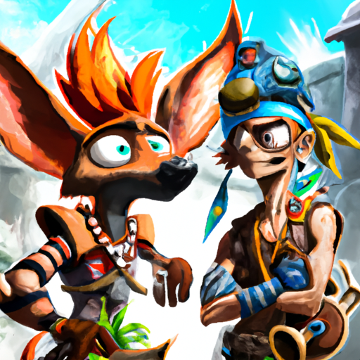

Jak and Daxter Return with New Video Game Developed by NaughtyDog in Late 2023!
Video game fans have long been eagerly awaiting the return of the beloved Jak and Daxter franchise. After years of speculation, it looks like their wait will soon be over. NaughtyDog, the developers of the original Jak and Daxter trilogy, have announced they will be developing a brand new video game in the franchise and it is set to be released in late 2023.
The announcement from NaughtyDog has many fans of the original trilogy excited and hopeful for the new game's success. NaughtyDog is renowned for their high-quality video games and for their attention to detail. This means that fans of the original trilogy are expecting a title that will live up to the name.
The new game is set to take place in an open-world and will feature all the characters fans know and love. It will also have an in-depth story that will allow players to explore the world and its characters in more detail. It will also feature an improved combat system and an enhanced graphics engine.
NaughtyDog is currently hard at work on the new game and is aiming to release it in late 2023. The game is expected to be available across multiple platforms, including the PlayStation 4 and Xbox One. This means that no matter what platform you use, you'll be able to experience all the new features and content of the game.
The new game is sure to be a huge hit, and fans of the franchise can expect a lot of great things from NaughtyDog's newest project. With all the advancements in technology and the team's experience in making great video games, we can expect a title that will be on par with the original trilogy. With the release of the new game in late 2023, we will finally get to experience the world of Jak and Daxter once again.